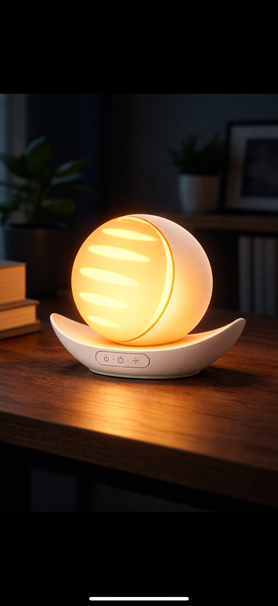
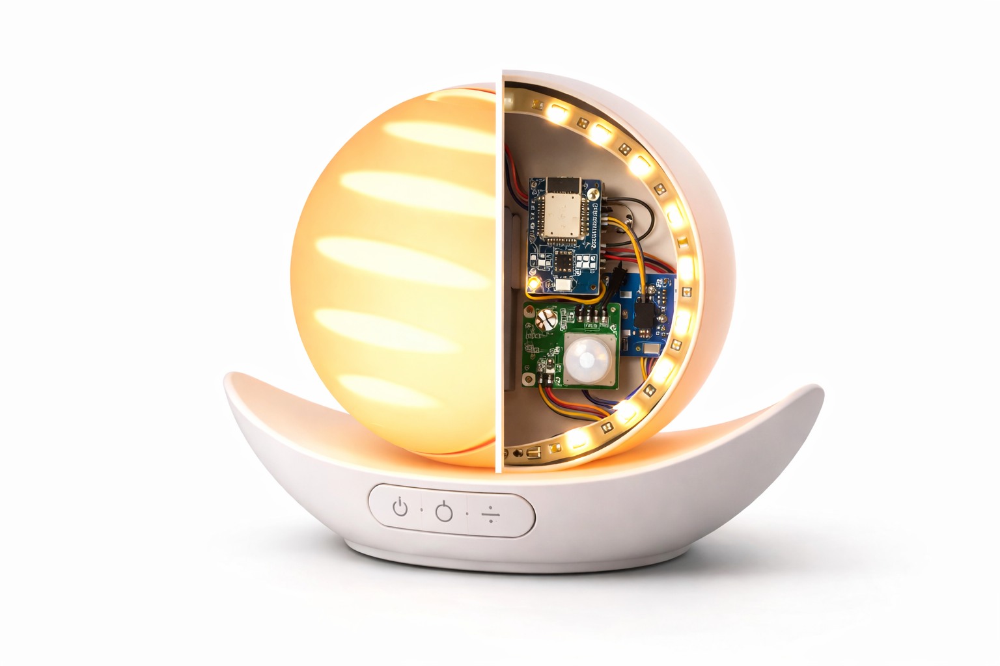
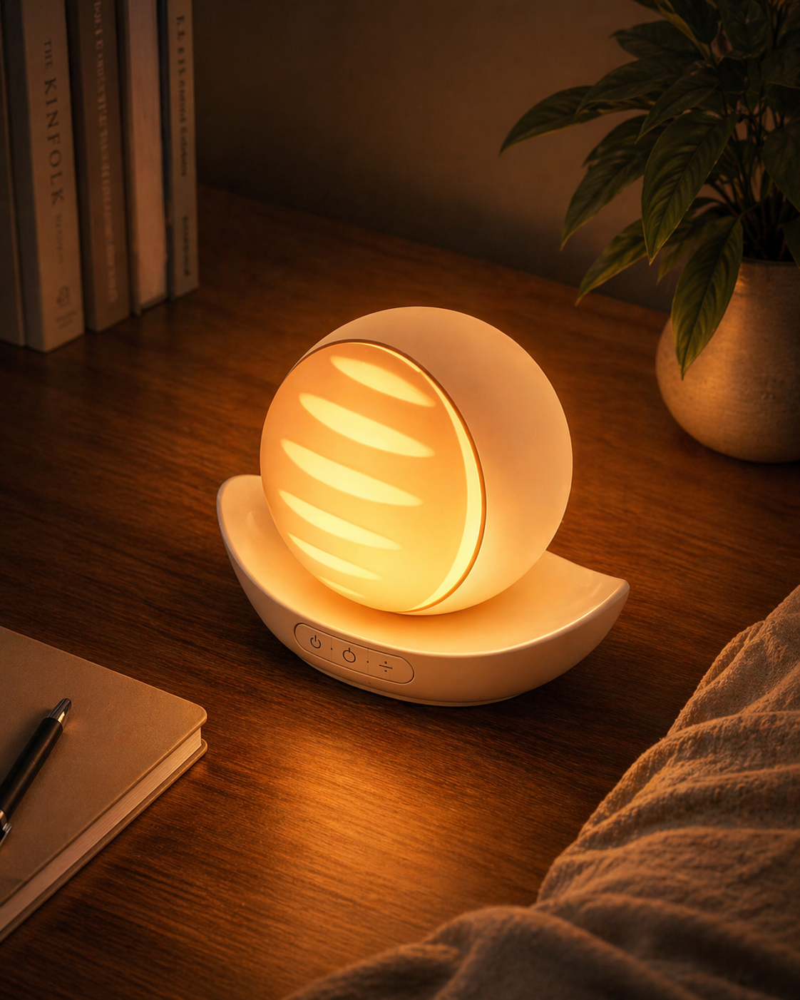
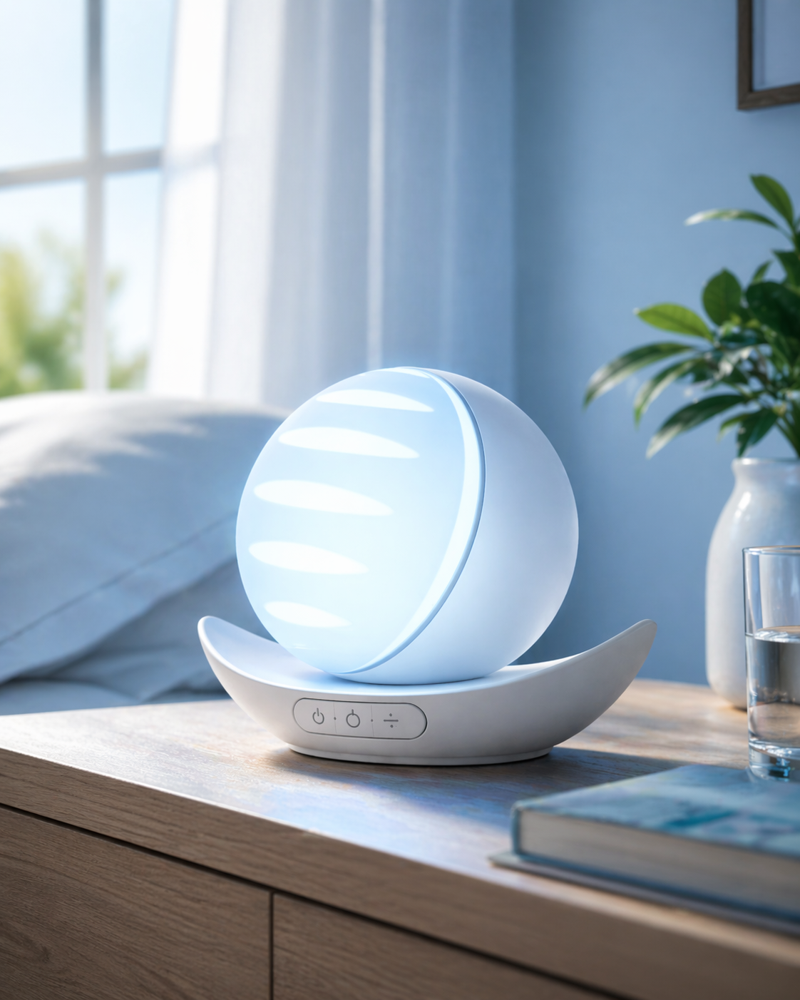
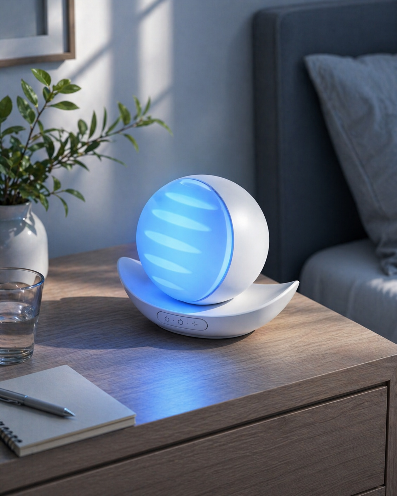
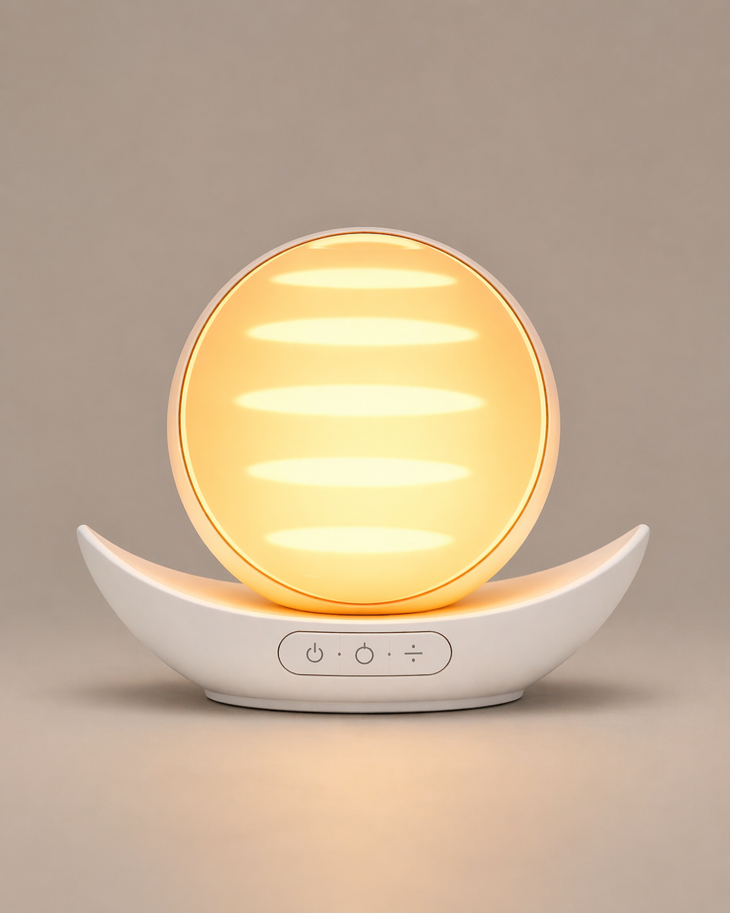

SunSync brings the sun indoors.
A smart lamp built around an ESP32, ambient light sensing, and precision firmware — designed to deliver stronger sleep and wake cues wherever natural sunlight can't reach.
Core Capabilities
Engineered from biology up.
Every component was chosen to serve one purpose: helping users sleep better and wake up sharper.
Precision Light Therapy
Scientifically-tuned warm red light during sleep phases stimulates melatonin release and lowers cortisol. A smooth transition to cool white light at wake-up triggers alertness and increases heart rate — countering the feeling of not wanting to get up.
Intelligent Sensing
Three photoresistors at equidistant positions provide redundant ambient readings — one can be blocked without compromising the system. A PIR motion sensor adapts brightness in real time, dimming when the user is asleep and rising when they wake early.
Open Local API
An embedded web server exposes REST endpoints at /api/sunsync, /api/color, and /api/config. NTP-synced time, mDNS discovery, and a WiFiManager captive portal make first-time setup seamless with no app required.
Project Demo
See SunSync in action.
Large file — manual playback prevents the full video loading on page open.
Circadian Cycle
Four phases. One seamless night.
SunSync maps its light output to your body clock — from wind-down through deep sleep to a gradual sunrise wake-up.
Sleep
At your configured sleep time, the lamp switches to deep red — wavelengths that avoid suppressing melatonin and signal the body it is time to wind down.
Sense
Three photoresistors and a PIR motion sensor continuously sample the room. If you move during the night the lamp dims further; if ambient light rises it adjusts accordingly.
Transition
Thirty minutes before your wake time, a smooth ramp begins — colour temperature climbs from warm amber toward cool white and brightness rises on a configurable curve.
Wake
At wake time the lamp holds peak cool white at full brightness — triggering cortisol response, raising heart rate, and giving you the sharp start that daylight delivers outdoors.
Product Gallery
Built by hand. Finished to last.
From perfboard assembly to 3D-printed shell — every layer of SunSync, photographed.






The Team
Meet the people behind SunSync.
Five disciplines. One cohesive build.
Lakhan
Lead Firmware Engineer
ESP32 C++ development, WiFiManager, NTP sync, REST API design, and LED control logic.
Viktor
Hardware Designer
PCB layout, component sourcing, power rail design, and photoresistor array configuration.
Lee
Project Manager
Gantt chart, risk register, meeting minutes, promotional website co-development submission deadlines.
Yuvraj
Marketing & UX
A1 Poster Design. Promotional Movie Shoots & Editing
Zeeshan
Product Designer
3D modeling, prototyping, Promotional Website co-development and user interface design.